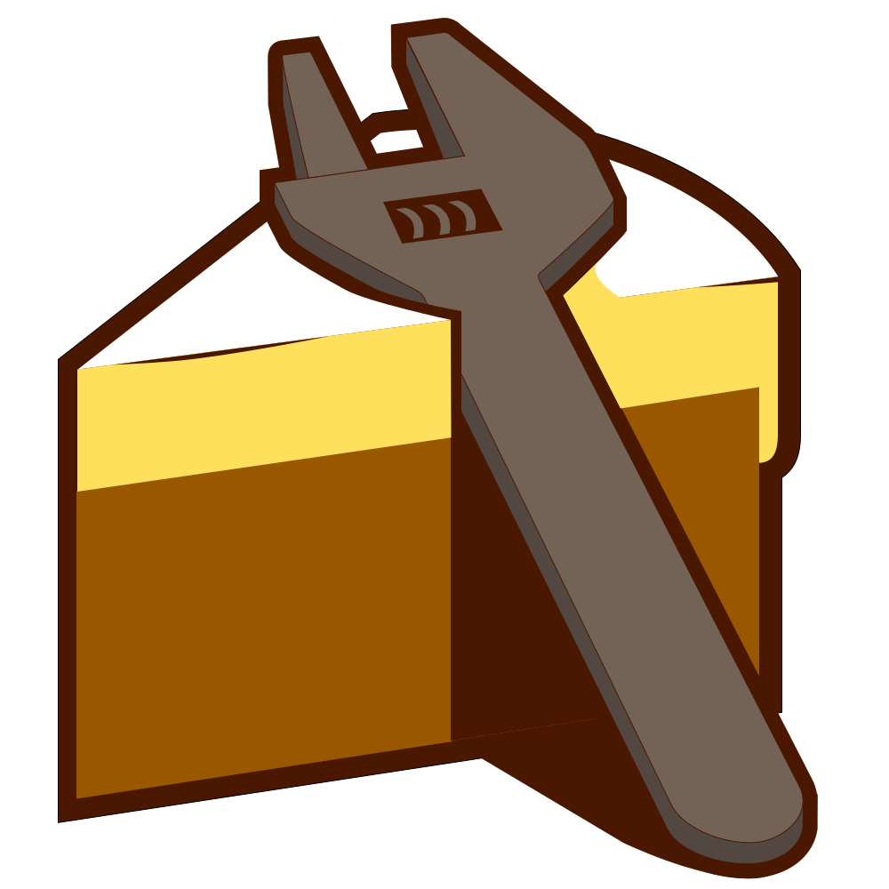

liberating C# from Visual Studio

What is OmniSharp?
To enable a great .NET experience in YOUR editor of choice.
in 2011

OmniSharp gives you the power...
- To choose your .NET platform
- To choose your .NET editor
- To customize your .NET experience
Liberate yourself from


How?
Number of downloads
- Atom - 25,000
- Brackets - #TODO#
- Emacs / Vim - ~400 clones / day
- Sublime - 12,000
- VS Code - #TODO#
So how does it work?

Plugins

Slides
Not a coder? Not a problem. There's a fully-featured visual editor for authoring these, try it out at http://slides.com.
Point of View
Press ESC to enter the slide overview.
Hold down alt and click on any element to zoom in on it using zoom.js. Alt + click anywhere to zoom back out.
Touch Optimized
Presentations look great on touch devices, like mobile phones and tablets. Simply swipe through your slides.
Fragments
Hit the next arrow...
... to step through ...
... a fragmented slide.
Fragment Styles
There's different types of fragments, like:
grow
shrink
fade-out
current-visible
highlight-red
highlight-blue
Transition Styles
You can select from different transitions, like:
None -
Fade -
Slide -
Convex -
Concave -
Zoom
Themes
reveal.js comes with a few themes built in:
Black (default) -
White -
League -
Sky -
Beige -
Simple
Serif -
Blood -
Night -
Moon -
Solarized
Slide Backgrounds
Set
data-background="#dddddd" on a slide to change the background color. All CSS color formats are supported.
Image Backgrounds
<section data-background="image.png">
Tiled Backgrounds
<section data-background="image.png" data-background-repeat="repeat" data-background-size="100px">
Video Backgrounds
<section data-background-video="video.mp4,video.webm">
... and GIFs!
Background Transitions
Different background transitions are available via the backgroundTransition option. This one's called "zoom".
Reveal.configure({ backgroundTransition: 'zoom' })
Background Transitions
You can override background transitions per-slide.
<section data-background-transition="zoom">
Pretty Code
function linkify( selector ) { if( supports3DTransforms ) { var nodes = document.querySelectorAll( selector ); for( var i = 0, len = nodes.length; i < len; i++ ) { var node = nodes[i]; if( !node.className ) { node.className += ' roll'; } } } }
Code syntax highlighting courtesy of highlight.js.
Marvelous List
- No order here
- Or here
- Or here
- Or here
Fantastic Ordered List
- One is smaller than...
- Two is smaller than...
- Three!
Tabular Tables
| Item | Value | Quantity |
|---|---|---|
| Apples | $1 | 7 |
| Lemonade | $2 | 18 |
| Bread | $3 | 2 |
Clever Quotes
These guys come in two forms, inline:
“The nice thing about standards is that there are so many to choose from”
and block:
“For years there has been a theory that millions of monkeys typing at random on millions of typewriters would reproduce the entire works of Shakespeare. The Internet has proven this theory to be untrue.”
Intergalactic Interconnections
You can link between slides internally, like this.
Speaker View
There's a speaker view. It includes a timer, preview of the upcoming slide as well as your speaker notes.
Press the S key to try it out.
Export to PDF
Presentations can be exported to PDF, here's an example:
Global State
Set
data-state="something" on a slide and
"something"
will be added as a class to the document element when the slide is open. This lets you apply broader style changes, like switching the page background.
State Events
Additionally custom events can be triggered on a per slide basis by binding to the
data-state name.
Reveal.addEventListener( 'customevent', function() { console.log( '"customevent" has fired' ); } );
Take a Moment
Press B or . on your keyboard to pause the presentation. This is helpful when you're on stage and want to take distracting slides off the screen.
Much more
- Right-to-left support
- Extensive JavaScript API
- Auto-progression
- Parallax backgrounds
- Custom keyboard bindings